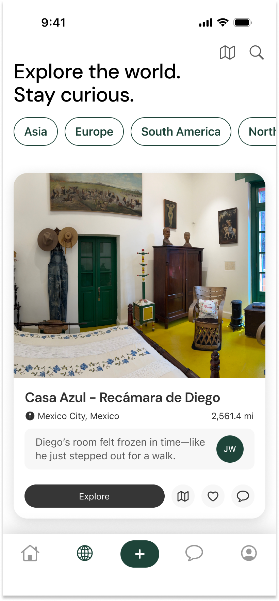
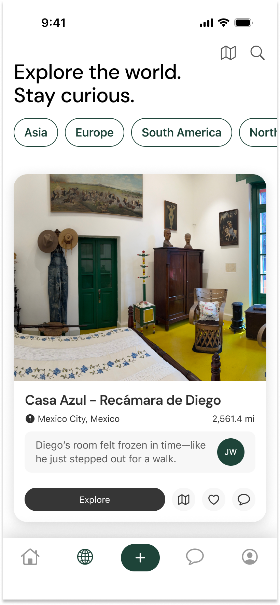

ARound
ARound is an AR-powered cultural immersion platform designed to help people experience the world without physical travel. Whether limited by finances, health, or geography, users can explore global landmarks, cultural sites, and stories through immersive, AI-powered posts. ARound fosters curiosity and global connection through user-generated experiences, helping people feel closer to distant cultures and loved ones.
Role
Founder & Lead Product Designer
Timeline
4 weeks
Mar-April 2025
Skills + Tools
UI/UX Design, Figma, Prototyping, Brand Design, User Research (Linescale)

The Challenge
Global travel remains inaccessible to many due to financial, health, political, and logistical barriers. Whether seeking to reconnect with family or explore cultural landmarks, people are often limited in their ability to experience the world firsthand. Traditional social platforms also fall short in offering meaningful cultural connection, instead emphasizing curated photos over immersive, informative content.
The Solution
ARound provides a virtual window into the world. It combines augmented reality, AI-generated educational overlays, and social interaction to let users discover, share, and explore cultural content from anywhere. Unlike static virtual tourism platforms, ARound turns every post into an immersive learning experience—fueled by community-driven storytelling and interactive exploration.
Key Features
- Personal Feed: Curated AR posts based on interest, with “Explore Mode” for immersive discovery.
- Explore Hub: Search posts by location, category, or via an interactive map.
- AR Creation: Scan and upload immersive, educational posts using AR tools and AI overlays.
- Connection: Chat and share AR experiences with others—stay close to family and connect globally.
- Profile: Save and manage your explorations, post history, and favorites.


 



Results & What’s Next
ARound is currently in early design and prototype development. The next phase involves refining educational overlays, implementing AR-based post creation in Swift, and preparing for user testing. The long-term goal is to empower global cultural discovery—without the barriers of borders or budgets—by providing an inclusive, immersive, and shareable travel alternative.